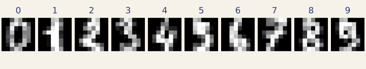

國立中山大學 · 人工智慧與數學整合學程
AI Agent × 數學
OpenCode 體驗工作坊
讓它跑實驗、畫圖、整理筆記，
再一步步學會判斷它做得對不對。
現場兩小時 · 使用內建網路模型 · 課前完成安裝

這場工作坊在做什麼
你會請 agent 寫程式、執行分析、畫圖，再打開成果，檢查它的解釋。每個實作都有可以直接貼上的指令，也會帶你練習自己追問。
看得懂少量 Python、接觸過一些微積分或線性代數，就可以從課前準備開始。用到的新概念會在正文說明，深入推導留到課後慢慢讀。
現場兩小時怎麼走
先完成課前準備。現場從第一次對話開始，依序走過三個 Lab；點下方的名稱就能進入教材。卡住時先查速查表。
| 00:00 | 綠燈檢查 課前 | 確認每台電腦都能啟動 OpenCode、用 uv 執行 Python。還沒完成安裝的，在這一步一起處理。 |
| 00:05 | 第一次對話 現場 | 先熟悉操作畫面，學會回應權限要求，並了解對話如何保存。 |
| 00:25 | Lab 1 · 分群 現場 | agent 當加速器。一句話換來十一組 k-means 與兩張圖，再比較「分群指標」與「數字標籤」回答的是不是同一個問題。 |
| 00:55 | 休息 | |
| 01:00 | Lab 2 · 降維 現場 | agent 當驗證對象。手刻 PCA vs sklearn，你負責設計能抓出錯誤的驗證方法。 |
| 01:30 | Lab 3 · 分類與筆記 現場 | agent 當學習夥伴。梯度檢查、線性可分的陷阱，再讓它把推導整理成 LaTeX 筆記（筆記可課後補完）。 |
| 01:55 | 收尾 | 挑選課後的操作練習與數學應用。 |
課程地圖
現場跟著上方時程走就好。課後可以挑自己想練的方向，不必一次讀完所有章節。
把 OpenCode 用得更順手
沿用已完成的 Lab，練習說清楚需求、保存進度與檢查修改。
- 讓 agent 把工作做完整拆步驟、提供錯誤訊息、在新對話繼續。
- 用 AGENTS.md 寫下專案規則把「一律用 uv run」「固定隨機種子」「手刻時不用 sklearn 代替」寫成規則，讓 agent 開始工作前有明確依據。
- git：讓你敢放手先存下起點，改完看 diff，再決定保留哪些修改。
- MCP、skills 與 subagent保存筆記流程，認識外部工具與唯讀檢查的分工。
- 在自己電腦上跑本地模型用 Ollama 連接 OpenCode，練習檢查 context 設定與工具呼叫。遇到問題時，先分清楚是設定、內容截斷，還是模型能力的限制。
把 agent 帶回數學課
- 數學應用練習選一題低秩近似、梯度下降或最短路徑，練習提出需求與驗證。
整理讀過的內容
- 課後補充：整理數學文獻與筆記讓 OpenCode 整理指定來源，再逐項核對，留下一份能回頭查的筆記。
從一段回答練習追問
agent 不只會給程式，也會說明它怎麼驗證。讀到下面這段回應，你會接著問什麼？
展開 PCA 任務與回應的範例節錄
手刻一個 PCA，不可以呼叫 sklearn。寫完自己驗證，並把驗證結果印出來。
Read AGENTS.md
Write pca_manual.py
uv run python pca_manual.py
驗證 1：解釋變異比例 最大差異 = 8.327e-17 → PASS
驗證 2：主成分方向 |cos| 最大偏離 1 = 8.882e-16 → PASS
驗證 3：重建誤差 差異 = 0.000e+00 → PASS
三項驗證都通過了。補充一點：第 4、7、8、9、10 個主成分的方向跟 sklearn 相反，
這是正常的，特徵向量的正負號本來就任意，所以我用 |cos| 而不是直接相減。
這段只節錄三項檢查，不是完整驗證流程。Lab 2 會逐步補齊檢查，並示範為什麼全部 PASS 仍可能漏掉錯誤。
例如：特徵向量的正負號可以不同，那麼用 |cos| 比對主成分方向就一定有效嗎？Lab 2 會帶你檢查這個條件。
開始之前
兩件必須先知道的事
一、免費模型會看你送過去的東西。
本工作坊用的 opencode/big-pickle 是限時免費的試用模型，
官方明講資料可能被用於改進模型。所以：不要把還沒發表的研究資料、
個人隱私資料、或任何機密內容丟進去。課堂用的都是 scikit-learn 內建的公開資料集。
二、agent 會動你的檔案。 它真的會寫檔、刪檔、執行指令。這不是聊天機器人。 先看過Git 安全網，或至少在動手前把重要的東西備份一份。